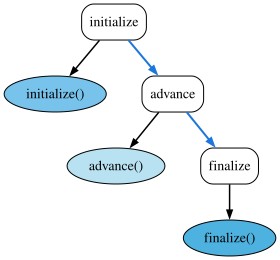
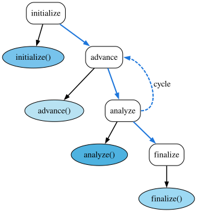
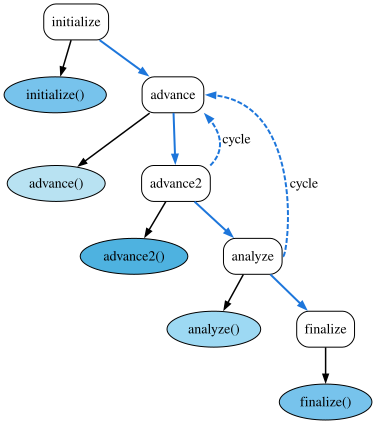
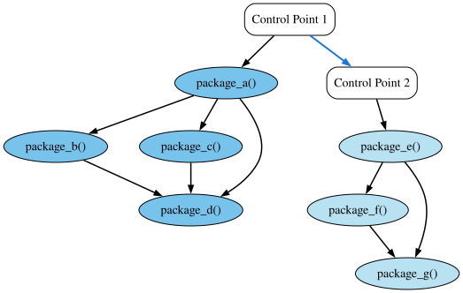

Control Model
FleCSI uses a graph of operations called a control model to structure the application. This tutorial demonstrates how to create a control model and how to extend one with additional operations. We begin with an extremely simple control model but quickly build to a more realistic example.
Attention
This tutorial breaks our convention of avoiding details of the FleCSI specialization layer (We lied to you in the tutorial introduction!). This is necessary to demonstrate how the code for this example works. In general, the control model for an application will be defined by the specialization developer, with a fixed set of documented control points that are not modifiable by the application developer. Users of the specialization (application developers) will add actions that define the substance of the simulation.
Example 1: Simple
This example will show you how to construct the simplest non-trivial control model that might make sense for an application. Fig. 2 shows the control model, which has three control points (initialize, advance, and finalize) with one action (a C++ function to call) under each. This is still not a very useful example because it lacks cycles (introduced in the next example). However, it will serve to introduce the definition of a control model from the core FleCSI type.
{kind=link}

Fig. 2 Control Model for Example 1.
Tip
This example introduces the notion of a policy type. Policies are C++ types (structs or classes) that can be used to define the behavior of another templated C++ type. This design pattern was introduced by Andrei Alexandrescu in Modern C++ Design. The details of the design pattern are not important to this example but may make interesting reading. For our purposes, a policy is simply a C++ struct that we pass to the core control type.
Defining Control Points
The first thing about a control model is the control points. To define these, we use an enumeration. Consider the following from tutorial/2-control/1-simple.hh:
// Enumeration defining the control point identifiers. This will be used to
// specialize the core control type.
enum class cp { initialize, advance, finalize };
The name of the enumeration (cp) is arbitrary.
However, it is useful to make it concise because it will be used in the
application code.
In addition to the enumeration itself, we also overload the * operator:
// Define labels for the control points. Using a function allows error
// checking.
inline const char *
operator*(cp control_point) {
switch(control_point) {
case cp::initialize:
return "initialize";
case cp::advance:
return "advance";
case cp::finalize:
return "finalize";
}
flog_fatal("invalid control point");
}
Perhaps this looks complicated, but really all it does is to return a
string literal given one of the control point enumeration values defined
in cp.
This approach is used by FleCSI because it is safer than defining a
static array of string literals.
The labels are used to create visualizations of the control model.
The following defines the actual control policy:
// Control policy for this example. The control policy primarily defines types
// that are used by the core control type to define the control-flow model for
// the program. For this simple example, the policy captures the user-defined
// enumeration of control-points identifiers, defines an empty node policy, and
// defines the order of control point execution using a list.
struct control_policy : flecsi::run::control_base {
// Capture the control points enumeration type. This type is used in the
// control policy interface whenever a control point is required.
using control_points_enum = cp;
// The control_points list defines the actual control points as typeified
// integers derived from the control point identifiers from the user-defined
// enumeration.
using control_points =
list<point<cp::initialize>, point<cp::advance>, point<cp::finalize>>;
}; // struct control_policy
The first type definition in the policy captures the control points enumeration type. This type is used in the control interface for declaring actions:
// Capture the control points enumeration type. This type is used in the
// control policy interface whenever a control point is required.
using control_points_enum = cp;
The actual control points are defined as a list of the typeified
integer-valued control points enumeration.
The templated point definition is a convenience interface for
typeifying the control points:
// The control_points list defines the actual control points as typeified
// integers derived from the control point identifiers from the user-defined
// enumeration.
using control_points =
list<point<cp::initialize>, point<cp::advance>, point<cp::finalize>>;
}; // struct control_policy
In the above control_points list definition, the order is important,
as it is the order in which the control points will be sorted and thus
executed.
Finally, after the control policy, we define a fully-qualified control type. This is the control type that we will use in our example application.
// Define a fully-qualified control type for the end user.
using control = flecsi::run::control<control_policy>;
That’s the entire control policy for this example. Without comments, it is about 20 lines of code. Let’s see how we use it!
Using the Control Interface
The source for this example is in tutorial/2-control/1-simple.cc. Much of the actual main function is the same as in the previous examples.
The last part of the main function is not really different from previous examples; we just now use our own control type. FleCSI therefore executes the actions registered on the control model.
// Run the control model. control::invoke will, in turn,
// execute all of the cycles, and actions of the control model.
return run.control<control>();
The return value is 0 or the value in a control_base::exception thrown by an action to terminate execution.
Now that we have defined the control model and added it to our runtime setup, the only thing that remains is to add some actions under the control points.
As stated, actions are nothing more than C/C++ functions.
For this example, there are three actions, which all have the same form.
We list only the initialize function here:
// Function definition of an initialize action.
void
initialize(control_policy &) {
flog(info) << "initialize" << std::endl;
}
To register an action with the control model, we declare a control action:
// Register the initialize action under the 'initialize' control point.
control::action<initialize, cp::initialize> initialize_action;
The template parameters to control::action are the function pointer initialize and the control point cp::initialize (which is why it can be expedient to use a concise enumeration type name).
Running this example prints the output of each of the three functions.
[info all p0] initialize
[info all p0] advance
[info all p0] finalize
Not very interesting, but you should begin to see the simplicity of defining and using a FleCSI control model.
Example 2: Cycles
Fig. 3 shows a slightly more realistic control model that cycles over advance and analyze control points. This example demonstrates how to add a cycle.
{kind=link}

Fig. 3 Example FleCSI Control Model with Cycle.
Starting from the previous example, we add the analyze control point:
enum class cp { initialize, advance, analyze, finalize };
inline const char *
operator*(cp control_point) {
switch(control_point) {
case cp::initialize:
return "initialize";
case cp::advance:
return "advance";
case cp::analyze:
return "analyze";
case cp::finalize:
return "finalize";
}
flog_fatal("invalid control point");
}
We will use cp::advance and cp::analyze to define the cycle from the
core FleCSI cycle type:
// A cycle type. Cycles are similar to the control_points tuple, with the
// addition of a predicate function that controls termination of the cycle.
using main_cycle =
cycle<cycle_control, point<cp::advance>, point<cp::analyze>>;
Cycles are similar to the control_points list, with the addition of a
predicate function that controls termination of the cycle:
// Cycle predicates are passed the policy object.
static bool cycle_control(control_policy & policy) {
return policy.step()++ < 5;
}
For this example, the control function simply iterates for five cycles. In a real application, the control function could be arbitrarily complex, e.g., invoking a reduction to compute a variable time step.
Notice that the cycle_control function (is static and) accepts the control object as a parameter.
In this case, we use it to access the step_ data member that keeps
track of which simulation step we are on:
Although this example is simple, in general we can use this design pattern to access simulation control state variables.
The last piece needed to add the cycle is the actual definition of the
control_points list type:
// The control_points list type takes the cycle as one of its
// elements. Valid types for the control_points tuple are, therefore,
// either typeified enumeration values, or cycles.
using control_points =
list<point<cp::initialize>, main_cycle, point<cp::finalize>>;
Other than adding an action under the new analyze control point, the main function for this example is the same.
Important
The core cycle type itself can contain a mixture of typeified enumeration values and cycles, such that cycles can be nested. It seems unlikely that most HPC simulations would need more than a couple of levels of cycling. However, FleCSI supports arbitrary cycle depths. Fig. 4 shows a sub-cycling control model. The details of the program to generate this figure are not discussed here. However, you can view the source in tutorial/2-control/2-subcycle.hh.
{kind=link}

Fig. 4 Example FleCSI Control Model with Sub-cycles.
Example 3: Dependencies
The code for this example provides a more detailed demonstration of adding dependencies between actions. In particular, it demonstrates adding dependencies after-the-fact. The resulting control model is shown in Fig. 5.
{kind=link}

Fig. 5 Example Action Dependencies.
For the most part, this example is self-explanatory. Several actions are defined for the two control points in 3-actions.hh:
// Register several actions under control point one.
inline void
package_a(dependencies::control_policy &) {
flog(info) << "package_a" << std::endl;
}
inline dependencies::control::action<package_a, dependencies::cp::cp1>
package_a_action;
inline void
package_b(dependencies::control_policy &) {
flog(info) << "package_b" << std::endl;
}
inline dependencies::control::action<package_b, dependencies::cp::cp1>
package_b_action;
inline void
package_c(dependencies::control_policy &) {
flog(info) << "package_c" << std::endl;
}
inline dependencies::control::action<package_c, dependencies::cp::cp1>
package_c_action;
inline void
package_d(dependencies::control_policy &) {
flog(info) << "package_d" << std::endl;
}
inline dependencies::control::action<package_d, dependencies::cp::cp1>
package_d_action;
// Register several actions under control point two.
inline void
package_e(dependencies::control_policy &) {
flog(info) << "package_e" << std::endl;
}
inline dependencies::control::action<package_e, dependencies::cp::cp2>
package_e_action;
inline void
package_f(dependencies::control_policy &) {
flog(info) << "package_f" << std::endl;
}
inline dependencies::control::action<package_f, dependencies::cp::cp2>
package_f_action;
inline void
package_g(dependencies::control_policy &) {
flog(info) << "package_g" << std::endl;
}
inline dependencies::control::action<package_g, dependencies::cp::cp2>
package_g_action;
Additionally, several dependencies are defined in the same file:
// Add dependencies a -> b, b -> d, and a -> d, i.e.,
// b depends on a, d depends on b, and d depends on a.
inline const auto dep_ba = package_b_action.add(package_a_action);
inline const auto dep_db = package_d_action.add(package_b_action);
inline const auto dep_da = package_d_action.add(package_a_action);
// Add dependencies e -> f, e -> g, and f -> g, i.e., f depends on e,
// g depends on e, and g depends on f.
inline const auto dep_fe = package_f_action.add(package_e_action);
inline const auto dep_ge = package_g_action.add(package_e_action);
inline const auto dep_gf = package_g_action.add(package_f_action);
Finally, the additional dependencies from c to a and from d to c are
added in the 3-dependencies.cc file:
// Add dependencies a -> c, and c -> d. These dependencies are added here to
// demonstrate that action relationships do not have to be defined in a single
// source file.
const auto dep_ca = package_c_action.add(package_a_action);
const auto dep_dc = package_d_action.add(package_c_action);
The point of defining the dependencies involving c in a different file
is to demonstrate that dependencies do not need to be collocated,
provided that they honor normal C++ declaration rules.
Example 4: Control State
Actions can use state via the control policy object argument:
void my_action(my_policy &p) {p.my_method();}
Let’s consider a concrete example of this. In tutorial/2-control/4-state.hh, we define a control policy with several methods and some private data:
std::size_t & step() {
return step_;
}
std::size_t & steps() {
return steps_;
}
void allocate_values(std::size_t size) {
// Instead of new we use make_unique to allocate a unique pointer.
values_ = std::make_unique<int_custom>(size);
}
void deallocate_values() {
// Instead of delete[] we reset the unique pointer to nullptr, which
// frees the custom object.
values_.reset();
}
int_custom & values() {
return *values_;
}
private:
//--------------------------------------------------------------------------
// State members
//--------------------------------------------------------------------------
Important
Although this example demonstrates the ability to allocate heap data through the control state interface, this approach must not be used to allocate data that will be accessed by tasks and modified during the simulation: i.e., control state data should be used only to hold global constants and/or implement the control logic of the run. As a special case, MPI tasks can access and modify such objects. The FleCSI data model provides other mechanisms for creating and managing state data, which are documented in the Data Model section of this tutorial.
These interfaces are used to implement the example actions in tutorial/2-control/4-state.cc. The basic structure of the example allocates a simple array, initializes the values, modifies the values, and frees the data. Again, the code is self-explanatory:
void
allocate(control_policy & policy) {
flog(info) << "allocate" << std::endl;
// Call a method of the control policy to allocate an array of size 10.
policy.allocate_values(10);
}
control::action<allocate, cp::allocate> allocate_action;
void
initialize(control_policy & policy) {
flog(info) << "initialize" << std::endl;
// Access the array through the 'values()' method, and initialize.
control_policy::int_custom & values = policy.values();
for(int i = 0; i < 10; ++i) {
values[i] = 20 - i;
} // for
policy.steps() = 5;
}
control::action<initialize, cp::initialize> initialize_action;
void
advance(control_policy & policy) {
std::stringstream ss;
ss << "advance " << policy.step() << std::endl;
// Access the array through the 'values()' method, and modify.
control_policy::int_custom & values = policy.values();
for(std::size_t i{0}; i < 10; ++i) {
ss << values[i] << " ";
values[i] = values[i] + 1;
} // for
ss << std::endl;
flog(info) << ss.str();
}
control::action<advance, cp::advance> advance_action;
void
finalize(control_policy & policy) {
flog(info) << "finalize" << std::endl;
// Deallocate the array using the control policy interface.
policy.deallocate_values();
}
control::action<finalize, cp::finalize> finalize_action;
The primary take-away from this example should be that users can define arbitrary C++ interfaces and data, given the concurrent access restrictions above.